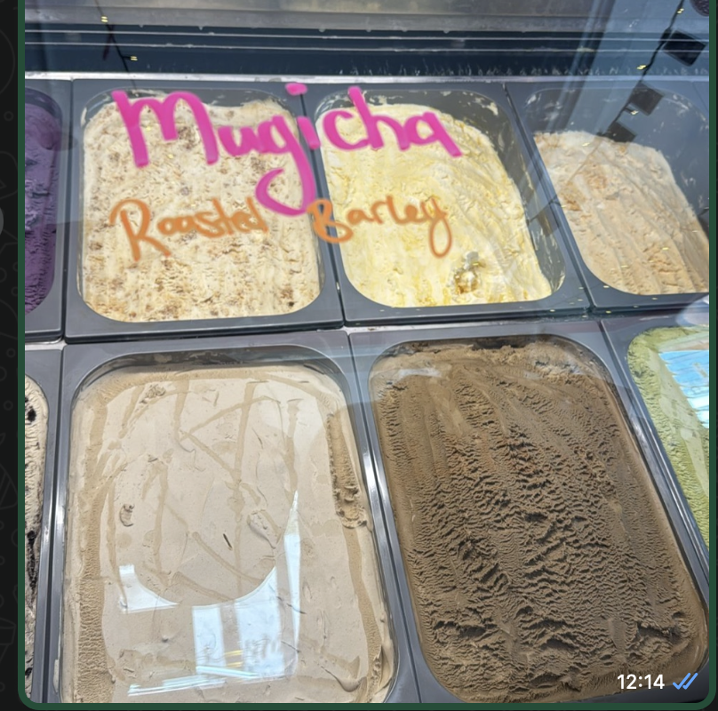
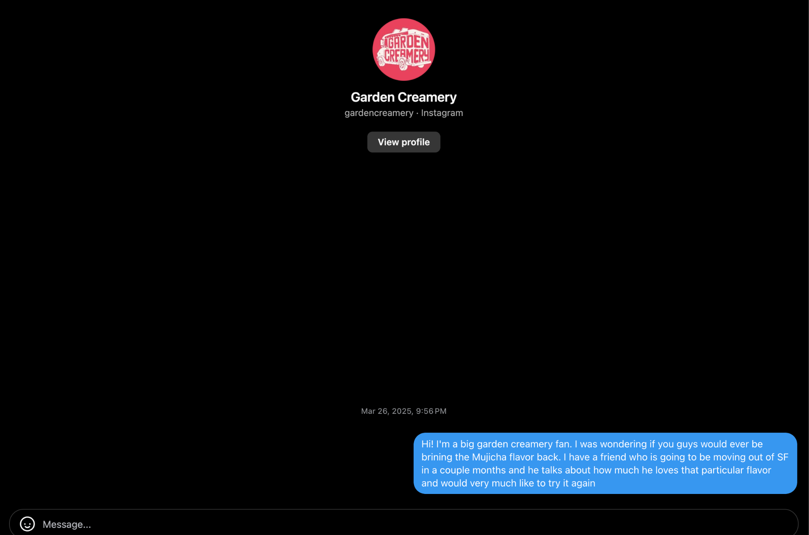
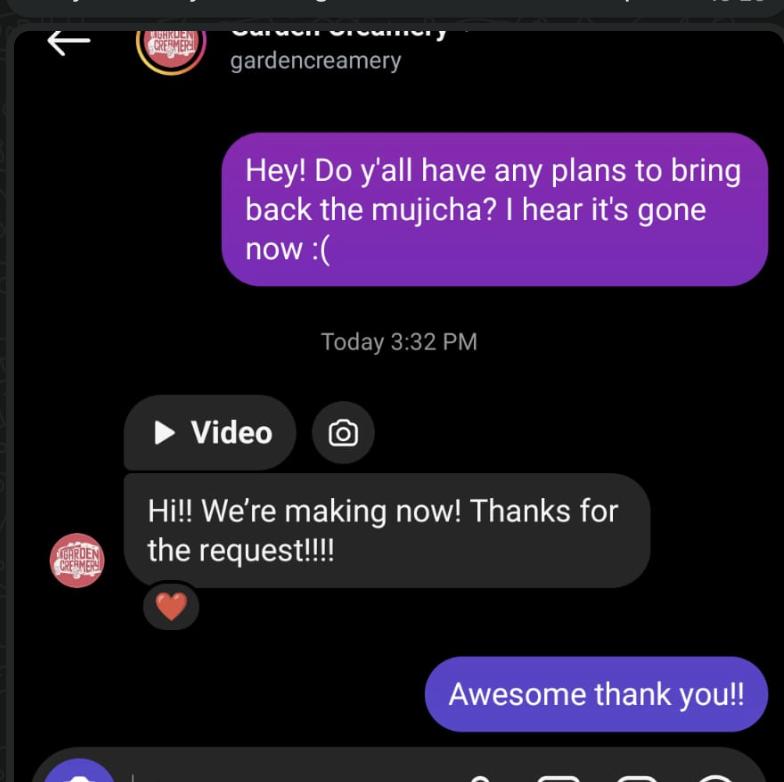
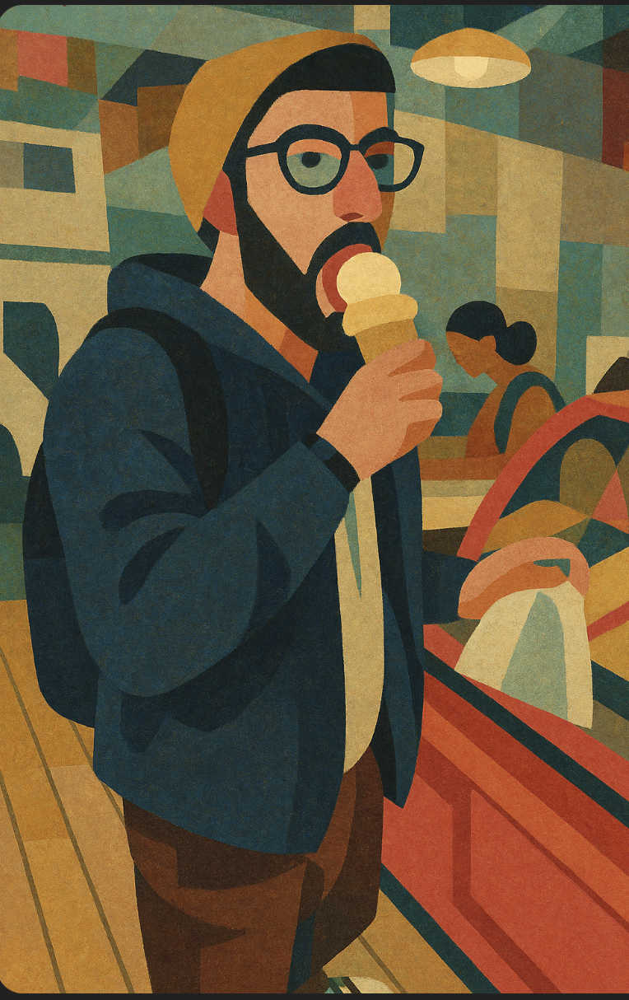
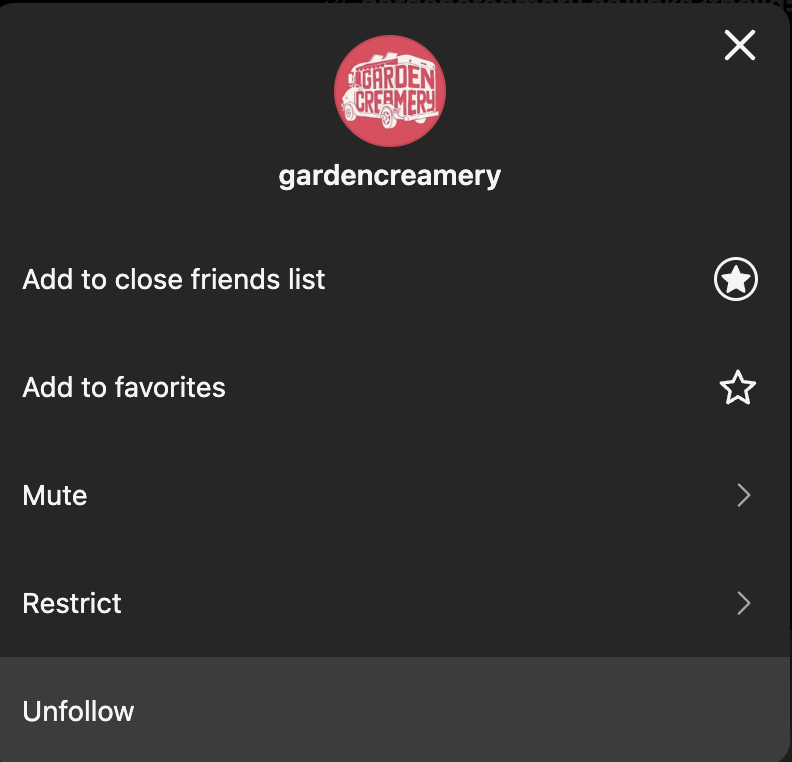
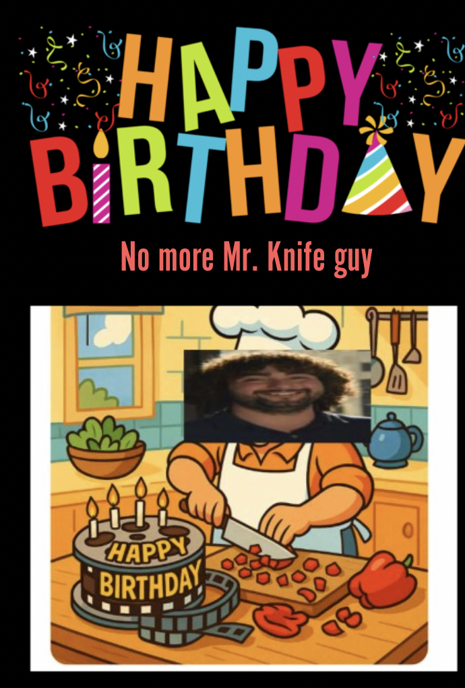

Episode 20
Monday
Today I worked and chilled afterwards.
Tuesday
Same as Tuesday (I’m very exciting and original).
Wednesday
Today i had to skip Midnight Runners and it wasn’t because of anything cool like The Dan’s birthday or being in Hawaii. Does anyone wanna throw out their wildest guess as to why I skipped this week? If you said its because my legs were still sore then you win 5 imaginary dollars. If you win 10 more imaginary dollars I’ll give you a custom prize.
Thursday
Today after work I stay late to do some work and after dinner I wind up playing Smash with some of my coworkers. While playing the topic of Pokemon comes up and we talk about how some pokemon like Lopunny are very sexualized. While talking with them I learn that some people made smash or pass tierlists for pokemon. Apparently Vaporeon is ranked as A tier and I said “Makes sense because Vaporeon can get you wet”. I know thats a messed up joke but I’m proud of it so its going in the newsletter 😤
Friday
Today after work I hang around the office and chat with some of my coworkers for a while. We just kinda chat for a while about random things. My coworkers are pretty cool and I’m usually pretty busy friday nights so perhaps it was a good thing I got this chance even if by this point in the week I was hoping I’d have more content for y’all.
Saturday
Today starts with trash pickup as per usual. Unfortunately since the organizer is out of town I have to step in from the shadows and help out with leading today. Every time I lead it makes it that much harder for me to lie to people and say its my first time doing it which is less than ideal. Nevertheless duty calls so I do what I can.
After trash pickup I head over to Round One in Stonestown. For those unaware Round One is a Japanese arcade chain that found its way over to America. I go with a group of friends and we play a variety of games. The game I spend the most time playing a rhythm game called Taiko no Tatsujin. Its a drum game where you have to hit the right notes on either the center or edge of the drum as well as the right side. One of my friends who spent a lot of time playing rhythm games winds up being really good at this. So good in fact that going forward in the newsletter I’ll refer to him solely as the “Raja of Rhythm” or “The Raja” for short.
The main reason we go to Round One is because one of my friends “The Quant”, finally passed level 3 of the CFA. He was studying really hard for it over many months so a huge congrats again to “The Quant” for passing.
After Round One we go back to “The Doctors” place and play some boardgames. While there we are joined by “The Plower”.
At point we wind up trying to play One Night werewolf with 3 people. Through this we develop a better appreciation of why you play this game with more people but also find some pretty fun edge cases in the game that only arise in these sorts of situations. It was pretty cursed but in my honest opinion more fun than regular One Night werewolf.
While this is happening the Warriors are playing the Rockets over at Chase center (The Doctor lives right near there). Funnily enough we wind up rooting against The Warriors because the sooner they get eliminated from the bracket the more quiet Chase Center will be and the less noise pollution The Doctor will have to live with (it can get pretty loud there).
Sunday
A couple hours before trash pickup I see a message in the organizers group chat saying we have no leads today so once again I have to come out of obscurity and help lead some wayward souls.
Because of the nature of the Sunday trash pickup I wind up needing to give a speech before to organize people. If I’m gonna come out of obscurity I figure I may as well have some fun with it. I put my usual card trick to good use and referred to everyone as “Munchkins” which felt right in the moment.
I also taught people a new word. During the speech its customary to have folks take a picture and usually during the picture the organizer says something pedestrian like “on 3 say trash”. But I figured as organizer I ought educate the masses so I said “on 3 say collywobbles”. Yes thats a real word and I highly encourage people to use it more. It means stomach pain or queasiness.
After trash pickup we do our post trash pickup hang and a day I have long been waiting for. As part of the hang we go to Garden Creamery and they finally have a flavor known as Mugicha!!

For those unaware Mugicha is roasted barley. Its a flavor of ice cream that Garden Creamery used to carry a couple years ago but stopped having. Astute readers might be wondering why I care about ice cream flavors since I’m a self professed lactose racist. Well astute reader (and the others who I’ll still tell anyway), the answer is because The Doctor really loves this flavor of ice cream and has wanted to see it back for quite a while.
Now it wasn’t just a coincidence that it happened to be back today. Its because of a long standing effort on my part. Back in episode 16 I mentioned reading about high agency and was thinking about how I could be more agentic. After I read the essay I set myself a goal of coming up with a task I could do to assert my own agency over the world. The goal I came up with was getting Garden Creamery to bring back the Mugicha.
I started off back then by messaging Garden Creamery on instagram asking if they could bring back the flavor.

As you can see … no response :(. The next Saturday I go in person and ask them about it. They mention having gotten my message and promise to bring it back sometime in the next week or two.
To keep an eye on things I follow Garden Creamery on instagram. I wanted to be ready the moment they announced it was coming back so I could alert The Doctor. Throughout this time I subject myself to a whole bunch of random stories on the Garden Creamery instagram feed that I give precisely zero hoots about. They talk and talk about different flavors they have each day and since none of them are the Mugicha … I don’t care. Apparently they have another instagram called “Dogs of garden creamery” and guess what … I don’t care! But I still gotta check every story *just in case* they feature the gosh darn Mugicha.
After a couple weeks I go back again and this time the workers there are even *less* helpful and just vaguely say they may bring it back again at some point. Gotta love that hedging!
On Saturday I was originally planning to go and ask them again until I realize I need a different approach. And then I had it! What if instead of one person messaging them on instagram I get a whole bunch of people messaging them on instagram! So I get a whole bunch of my friends including several people at trash pickup, The Quant, and The Plower to message them. I do this on Saturday and then they finally respond with a video that they are making it!

Big thanks to all my friends who messaged Garden Creamery on my behalf and helping me bring back the Mugicha! I wonder how it is? Truthfully I’m not much of a barley guy.
As soon as I message The Doctor he Ubers over to Garden Creamery. Since this is special I ask the Garden creamery staff to greet him when he comes in with a “Welcome <insert real name here>! Would you like the Mugicha?”. I figured if I’m going through all this effort why not really go all out! I made sure to video the whole thing and while I won’t be sharing the video here here is an abstract art rendition of the moment

While seeing the look on The Doctor’s face may have been the best part I think the below is a close second.

Now I’m wondering what my next Agency project will be. I’m not entirely sure yet but if any of you have thoughts I’d love to hear them. I’m toying with the idea of trying to be a Yelp elite. Originally I never really thought about it much as I didn’t think of myself as a foodie and didn’t have a high opinion of people who called themselves foodies. But after meeting “The Dentist” whose a Yelp elite I realize perhaps if other Yelp elites are also like “The Dentist” maybe it could be worthwhile after all.
After making history I resume my post trash pickup hang. It turns out its a friends birthday today and he is having a birthday party. Unfortunately I can’t make it but I do get him this card

He is a big fan of both cooking and film so I thought this would be fun. At this point I’ve gotten good enough at making custom birthday cards that I can do the whole process entirely on my phone now.
After wandering around in the Mission we go back to “The Raja’s” place and do some workouts. The Raja does a lot of home workouts so we do a variety of things ranging from pushes, curls, legs, and core. By far core is my strongest area for whatever reason and pushes my weakest. When doing a plank I’m pleasantly surprised by my ability to hold a plank for over 2 and a half minutes and longer than the others. When doing pushes I’m unpleastantly unsurprsied by my ineptitude to do anything of merit.
I would have been ok on legs if I wasn’t still somewhat sore from last week. After that I go home and write up the newsletter.